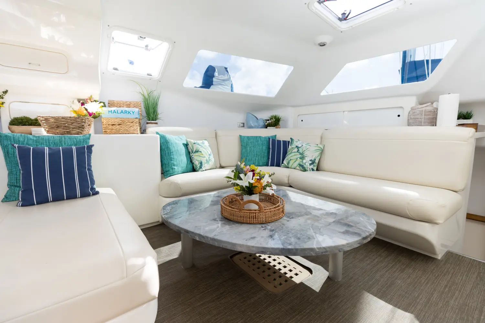
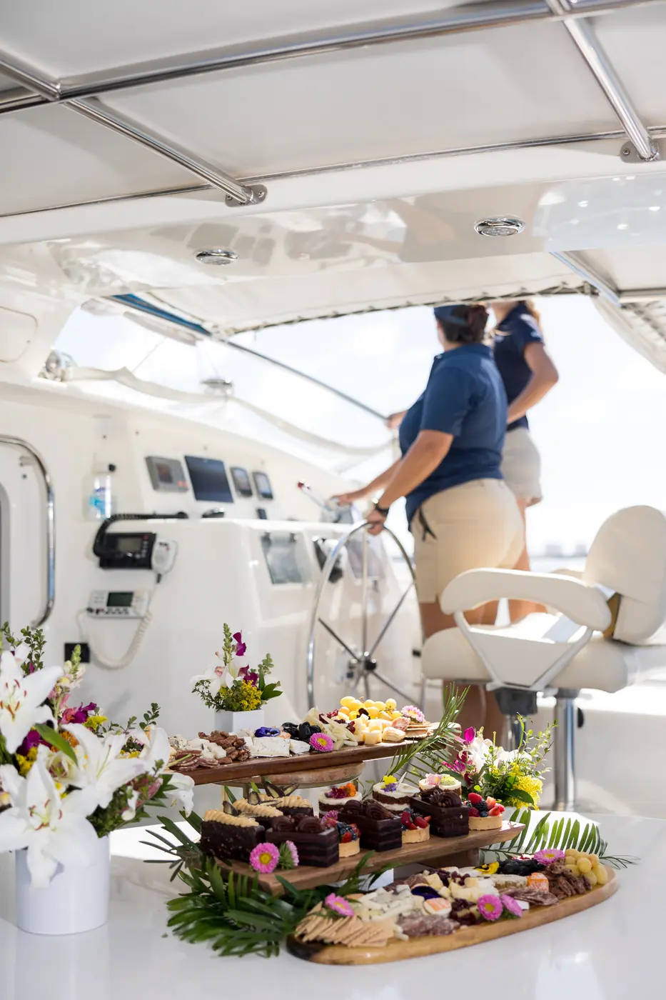

If you've got a question that didn't get covered on the page you came from, it's probably here. Thirty FAQs across seven categories, booking and cancellation, the boat itself, BYOB and catering, charter types, captain and crew, water toys and add-ons, weather and logistics. Each section cross-links to the relevant deeper page.
Jump to: Booking · The Boat · BYOB & Catering · Charter Types · Captain & Crew · Water Toys · Logistics
The basics of how to actually get a charter on the calendar and what happens if plans change. For the full pricing structure, see the yacht charter pricing page. For the dedicated booking process, see the booking info page.
What you're actually chartering. For the broader product context, see the private yacht charter and luxury yacht rental pages.

One of Malarky's defining structural advantages: BYOB is the model, not the exception. For the full cost-savings story, see the BYOB yacht charter page.

Which page covers your event. Quick navigation: weddings, bachelorette, anniversary, birthday, proposal, executive, water toys day.
Who runs the boat and what they actually do. For executive, proposal, and similar private bookings, see the executive yacht charter page for the full privacy protocol.
The in-water add-on lineup. For the full breakdown including the bundle logic, see the boat rental with water toys page.
The operational details for the day-of. For specific questions not covered here, contact us.